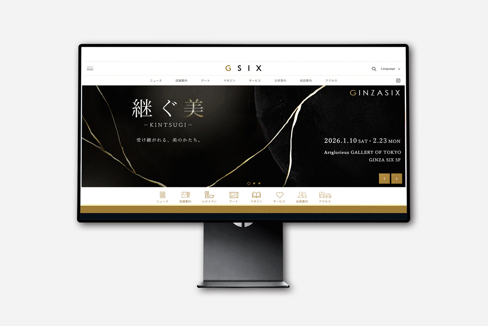
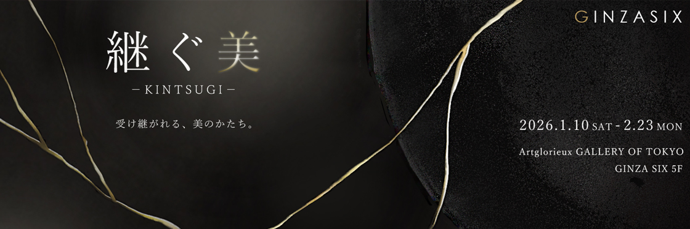

継ぐ美 -KINTSUGI-
Graphic Design / Key Visual
Adobe Photoshop
GINZA SIX内のギャラリーで行われる金継ぎの展示知らせるサイトのキービジュアル。新たな美しさとして生まれ変わらせる金継ぎの美しさを表現した。日本の伝統技法が持つ価値や魅力を、現代にも伝わるような空間を目指した。黒を基調とした配色で全体をまとめ、金継ぎの輝きが際立つように調節。「美」の文字にはグラデーションや交際を加え、展示の世界観を印象的に演出している。また、陶器の色味を調節することで、全体に統一感を持たせている。